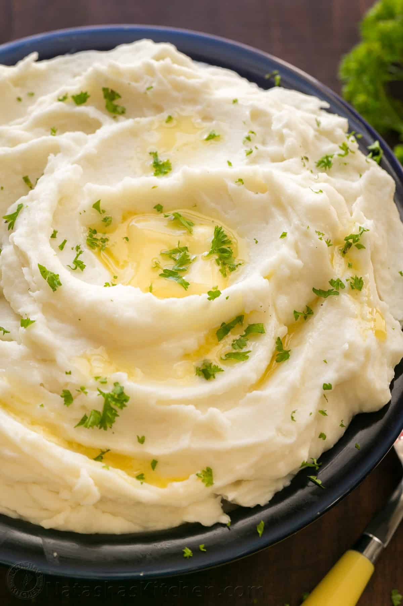

Creamy Mashed Potatoes

Creamy Mashed Potatoes need I say more. Nice smooth texture with a beautiful taste. This is a recipe I picked up from a website because I have no cooking skills and too lazy to learn.
Ingredients
- 4 lbs (12 medium) russet potatoes, peeled
- 1 1/4 cups hot milk
- 2 sticks (1 cup) unsalted butter at room temperature (not melted)
- 1 1/2 tsp sea salt
- 1 Tbsp fresh parsley or chives, finely chopped for garnish
Steps
- Peel potatoes (cut potatoes in half if very large). If you want the potatoes to be the smoothest possible, you can take the time to remove the little knots from the potatoes with a small spoon or the tip of a potatoes peeler. Place potatoes in a large pot (5 Qt+) and add enough cold water to cover potatoes. Bring to a boil and cook partially covered until easily pierced with a knife (boil 20-25 minutes depending on the size of your potatoes; mine took 22 min).
- Drain well and transfer to the bowl of your stand mixer. Grab the whisk attachment and mash potatoes lightly by hand to break them up. Fit mixer with whisk attachment and start mixer on low speed 30 seconds then increase to medium and slowly drizzle in 1 to 1 1/4 cups HOT milk.
- With mixer on, add softened butter 1 Tbsp at a time, waiting a few seconds between each addition. Potatoes should be whipped and fluffy. Finally add 1 1/2 tsp salt, or to taste.
- To keep mashed potatoes warm until serving: cover potatoes and place into a warm oven or transfer to a slow cooker on the warm setting to keep potatoes warm until ready to serve.